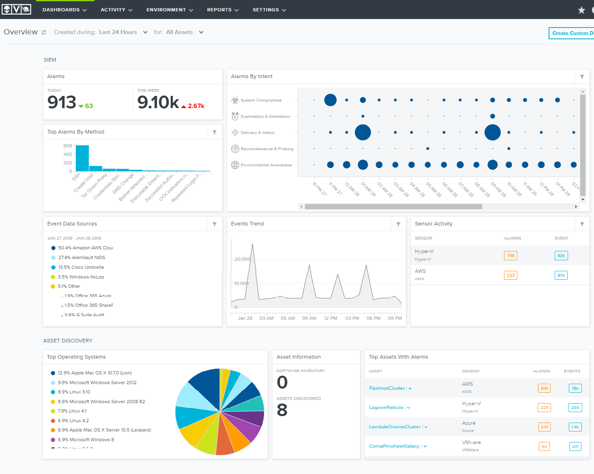
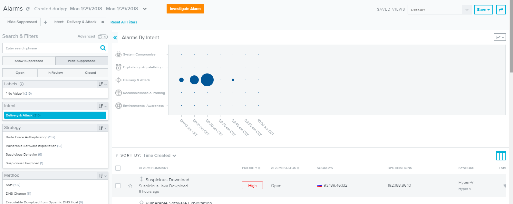

Upravljanje rizicima pomoću alata AlienVault
Temu rezervirala:
- Nikolina Kolačko
Sadržaj |
Open Threat Exchange
AlienVault Open Threat Exchange (OTX) je najvažnija svjetska mreža za razmjenu informacija i analizu otvorenih prijetnji. OTX pruža pristup globalnoj zajednici istraživača prijetnji i sigurnosnih stručnjaka, s više od 50000 korisnika u 140 zemalja. On omogućava svakome u zajednici aktivno raspravljanje, istraživanje, potvrđivanje i dijeljenje najnovijih podataka o prijetnji, trendovima i tehnika.
Putem impulsa se primaju podaci i daju izvještaji. OTX puls se sastoji od jednog ili više pokazatelja kompromisa (IOCs) koji predstavljaju prijetnju ili određuju niz akcija koje bi se mogle koristiti za izvršavanje napada na mrežne uređaje i računala. Ovi impulsi pružaju informacije o pouzdanosti informacija prijetnji, tko je prijavio prijetnju i ostale pojedinosti.
OTX podaci mogu se koristiti za poboljšanje mogućnosti otkrivanja prijetnji, ne samo za sustave sigurnosnog nadzora kao što su AlienVault USM Appliance, AlienVault USM Anywhere, AlienVault OSSIM platforme, ali i drugih sigurnosnih sustava nadzora i upravljanja treće strane.
AlienVault USM (Unified Security Management)
Pruža snažnu prepoznatljivost prijetnji, odgovor na incidente i upravljanje usklađenošću u okolinama poput onih postavljenih lokalno, u oblaku (eng. „cloud“) ili kombinirano. Za razliku od ostalih sigurnosnih rješenja na tržištu, USM Anywhere kombinira više bitnih sigurnosnih mogućnosti na jedinstvenoj platformi: kao što su otkrivanje imovine (asset discovery), ranjivosti, otkrivanje upada, praćenje ponašanja, SEIM, upravljanje zapisima, kao i kontinuiranu inteligenciju prijetnji.
Sa njim se izbjegava vrijem, troškovi i resursi potrebni za implementaciju i održavanje sigurnosnih rješenja s više točaka u podatkovnom centru i infrastrukturi.
{kind=link}
Funkcije programa
1. Asset Discovery / otkrivanje imovine
Daje se uvid u ranjivost i aktivne prijetnje protiv imovine u oblaku i lokalnim okruženjima.
Otkrivanje svih uređaja s IP-om na našoj mreži, određivanje softvera i usluga koje su instalirane na njima, način konfiguriranja te eventualno izvršenje ranjivosti ili aktivnih prijetnji.
2. Network Vulnerability Assessment / mrežna ranjivost
Pomoću procjene ranjivosti mreže može se pronaći slabe točke u našoj kritičnoj imovini i poduzeti korektivne radnje prije nego što ih napadač iskoristi kako bi ukrali povjerljive podatke. Stalno ažuriranje aplikacija i promjene u aplikacijama i konfiguracijama sustava mogu uvesti ranjivosti i ostaviti vas podložnim napadima, čak i ako održavate sigurnosne nadzore ažuriranima. Da biste zaštitili svoje podatke, morate kontinuirano skenirati svoje sustave i uređaje za otkrivanje ranjivosti kada se pojave. Nakon što se otkrije, morate procijeniti potencijalnu prijetnju tih ranjivosti i odrediti prioritetne aktivnosti sanacije za rješavanje najvećih prijetnji.
3. Intrusion Detection System (IDS)
Omogućava rano otkrivanje upada i reakcije pomoću ugrađenog otkrivanja upadu u oblaku, otkrivanje upada u mreži (NIDS) i sustav za otkrivanje upada u tunelima (HIDS). Ovi alati prate promet i domaćine, zajedno s korisničkim i administrativnim aktivnostima, tražeći anomalije ponašanja i poznate uzorke napada. Ugrađena SIEM sposobnost na USM platformi automatski povezuje IDS podatke s drugim sigurnosnim informacijama kako bi vam pružila potpunu vidljivost vašeg sigurnosnog držanja.
4. Behavioral Monitoring Software / za praćenje ponašanja
Kada je riječ o prepoznavanju prijetnji u vašem okolišu, najbolji pristup je višeslojni. Sustavi za otkrivanje upada (mreža i IDS domaćina) prepoznaju poznate prijetnje, a analiza ponašanja u mreži može vam pomoći identificirati anomalije i druge obrasce koji signaliziraju nove i nepoznate prijetnje. Sposobnosti praćenja ponašanja ugrađene u AlienVault USM pružaju ovu osnovnu funkcionalnost sljedećim tehnikama:
-Praćenje servisa i infrastrukture: osigurava kontinuirano praćenje usluga koje obavljaju pojedini sustavi. Na periodičnoj osnovi ili na zahtjev, uređaj će provjeriti da je usluga i dalje dostupna. Ovo lagano, kontinuirano praćenje će otkriti neočekivane servisne zastoje u vašoj kritičnoj infrastrukturi.
-NetFlow analiza: obavlja analizu mrežnog ponašanja bez potrebe za kapacitetom pohrane potrebne za puni prijenos paketa. NetFlow analiza pruža visoke razine trendova koji se odnose na protokole koji se koriste, a koji domaćini upotrebljavaju protokol i korištenje propusne moći.
-Analiza mrežnog protokola: omogućuje sigurnosnim analitičarima da obavljaju cjelovitu analizu protokola na mrežnom prometu, što omogućuje potpunu reprodukciju događaja koji su se dogodili tijekom potencijalnog kršenja.
5.SIEM and Long Managment
Tradicionalna SIEM softverska rješenja obećavaju da pružaju ono što vam treba, no put do tamo je onaj koji većina nas ne može priuštiti. Tradicionalne SIEM rješenja prikupljaju i analiziraju podatke proizvedene drugim sigurnosnim alatima i izvorima dnevnika, što može biti skupo i složeno za implementaciju i integraciju. Osim toga, oni zahtijevaju konstantno fino podešavanje i pravilo pisanja. AlienVault USM pruža drukčiji put. Uz sve funkcionalnosti svjetske klase SIEM, AlienVault USM također uključuje bitne sigurnosne mogućnosti na jednoj platformi bez dodatnih značajki.
AlienVault USM centralizira sve potrebne sigurnosne sposobnosti i grafičku nadzornu ploču s alarmom koja koristi taksonomiju ubiti lanac da usredotoči vašu pažnju na najozbiljnije prijetnje. Za svaki alarm u AlienVault USM-u imate potpun pregled podataka o prijetnji: metode napada, povezane događaje, izvorne i odredišne IP adrese, kao i preporuke za sanaciju odgovora na incident u jedinstvenom pogledu, tako da možete brže istražiti i reagirati na prijetnje. USM platforma radi kako bi se smanjili bučni alarmi i lažni pozitivni učinci vašeg rada učinkovitijima.
AlienVault USM izbacuje napade u pet kategorija prijetnji kako bi vam olakšao prepoznavanje težine napada i težine prijetnje, na temelju načina na koji prijetnje utječu na vašu okolinu.
•Kompromis sustava - Ponašanje koje ukazuje na kompromitirani sustav
•Iskorištavanje i instalacija - ponašanje koje ukazuje na uspješno iskorištavanje ranjivosti ili stražnjih vrata / RAT instaliran na sustavu
•Dostava i napad - Ponašanje koje ukazuje na pokušaj isporuke eksploatacije
•Upoznavanje i probno ponašanje - Ponašanje koje ukazuje na lošeg glumca koji pokušava otkriti informacije o vašoj mreži
•Svijest o zaštiti okoliša - ponašanje koje ukazuje na kršenja pravila, ranjiv softver ili sumnjive komunikacije
Primjeri programa

Ovaj alat prikuplja sve SIEM događaje ( sve ono što se smatra incidentom, pa se sukladno o tome SIEM poruke treba se poduzeti određena akcija). Podaci koje imamo trenutno prikaze su podaci koji su već konfigurirani od strane samog Alien Vaulta. Neki podaci su ažurni za što najvjerojatnije koriste svoj drugi proizvod OSSIM.
{kind=link}
Početno sučelje je glavni preglednik (eng. Overview) u kojemu se nalaze statistički podaci temeljeni na izvorima SIEM podataka i drugih incidenata. Prikazani su po kategorijema, npr. Alarms (potencijalne opasne radnje), Alarms By Intent, Top Alarms By Method, Event Data Sources, Events Trend, Sensor Activity, Top Operating Systems, Asset Information, Top Assets With Alarms, Assets With Vulnerabilities, Vulnerabilities By Severity i Most Vulnerable Hosts.
Top OS označava postotak zastupljeni operacijskih sustava u smislu imovine koja se koristi kod infrastrukture koje se prate.
Top imovina sa najčešćim sigurnosnim upozorenjima prikazuje koliko je sigurnosnih upozorenja ( eng. Alarms), a koliko je događaja (eng. Evenets).
Klikom na jedan od plavih kružića u grafu Alarms By Intent (potencijalno opasna radnja prema namjeni) pokazuje se dan, datum i vrijeme kad je bio (Deliveri and Attack – ponašanje koje pokazuje namjerno iskorištavanje propusta unutar mrežnih infrastruktura kao što je izvršavanje malcioznih skripti na žrtvi). Otvara nam se novo sučelje, slika 2.

Prikazani je detaljni objašnjene odabrane potencijalne radnje, vidimo da se mogu podaci filtrirati. Filtriranje se može vršiti po nekoliko kategorija kao što je:
- strategija ( izgradnja vlastitog servera koji žrtvama širi lažne DNS poruke kako bi ih preusmjerio na maliciozne stranice),
- metode ( vektori napada, vrste malicioznog koda ili obični softverski program),
- senzori ( mogu biti usluge poput servera za SandBoxing koji je infrastruktura koja je izolirana i služi za otkrivanje malicioznosti pokretnog opasnog programa ili programskog koda),
- imovinske grupe (to su kategorije poput vrste servisa ( web, meil, itd.), OS i sl.), prioriteti ( u njima je određen stupanj opasnosti za pojedinu potencijalno opasnu radnju, može biti: hight, medium, low).
Jedna od mogućnosti je i izrada izvještaja gdje se može birati kategorija ili format po kojem želimo napraviti izvještaj.
{kind=link}
Zaključak
AlienVault USM je program kojim se lako koristi, prilagođen je ljudima koji žele pratiti sigurnosno upozorenje i incidente unutar svoje organizacije ili već željenih infrastruktura. Dobra stvar ovog programa je što prikuplja informacije o zadnjim ranjavostima koje nalaza servisi za identifikaciju ranjivosti poput OTX-a.